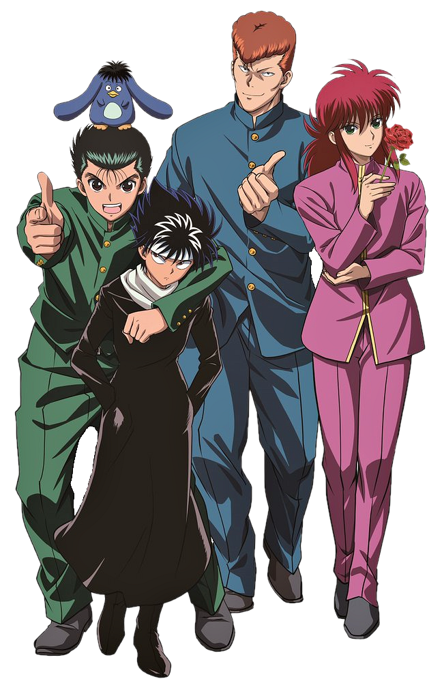
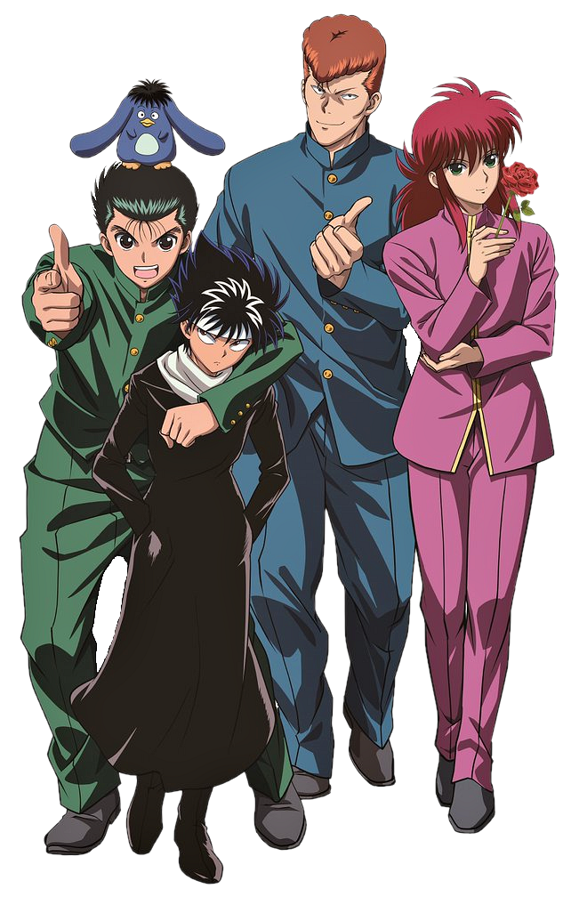

Quem nasceu nos anos 90 sabe o quão dificil era assistir os animes na época, pois a internet não era o auge do tempo, e eu dependia da tv para poder assistir. Tinhamos que torcer para que o horario da escola não ficasse no mesmo tempo em que passasse os animes. Pois bem, eu tive muita sorte pois conseguia assistir uma boa parte dos animes.
E como já relatei antes, eu dependia da tv para assistir, então obviamente eu assistia tudo dublado. E sabemos que muitas vozes dos personagens marcaram demais na época, e até hoje marcam, pois muitos ainda continuam dublando até hoje. E o que seria de nóis sem a dedicação desses dubladores? Que emocionaram e interpretaram muito bem, varios momentos emocionantes dos animes.
Mas Chega de conversa, eu quero propor a você um desafio agora. Quero que você escute os áudios que coloquei com muito carinho a baixo, e me responda se você reconhece essas vozes. Caso você saiba de qual personagem é essa voz , me responda então. Mas tambem quero saber se você é realmente fã de verdade, será que você pode me dizer quem é o dublador? Reponda então ou descubra quem são os personagens e os seus dubladores.
Hermes Pereira Baroli (São Paulo, 21 de julho de 1976) é um ator, dublador e diretor de dublagem brasileiro. Filho dos também atores e dubladores Gilberto Baroli e Zodja Pereira, irmão das atrizes e dubladoras Letícia Quinto e meio-irmão de Luciana Baroli. Um dos seus trabalhos mais marcantes foi a dublagem do personagem Seiya de Pégaso, em Cavaleiros do Zodíaco.Dublou também Matt Damon em O Resgate do Soldado Ryan, Manabu do seriado Sekai Ninja Sen Jiraiya, Edward Norton em Clube da Luta, James Franco em 127 Horas e Ciclope (1ª voz) de X-Men Evolution.


Marco Antônio Ribeiro da Silva (Rio de Janeiro, 22 de Agosto de 1970) é um dublador, diretor de dublagem e religioso brasileiro. É conhecido por seus trabalhos de dublagem de filmes americanos, como a maioria dos filmes estrelados por Jim Carrey, Tom Hanks e Robert Downey Jr. Começou a dublar em 1986 na Herbert Richers. É primo do também dublador Duda Ribeiro, e pai do dublador Renan Ribeiro.
Marli Bortoletto (São Bernardo do Campo, 16 de janeiro de 1959) é uma atriz e dubladora brasileira. Marli é conhecida por ser a voz oficial da personagem Mônica. Na dublagem, é conhecida por ser a voz oficial da personagem Mônica do cartunista Mauricio de Sousa. m animes, dublou a personagem Sailor Moon, Hilda de Polaris em Os Cavaleiros do Zodíaco. E em jogos dublou a personagem Fiora no jogo League of Legends
Wendel Luís Bezerra da Silva (São Paulo, 18 de junho de 1974) é um ator, dublador, diretor de dublagem, locutor e youtuber brasileiro, na área desde os oito anos de idade.Também dirige a dublagem de séries e filmes. Tem quatro irmãos, dos quais dois também seguem a carreira de dublador, Ulisses e Úrsula Bezerra. Entre seus trabalhos mais famosos, estão a dublagem de Buddy Valastro (de Cake Boss), de Goku (Dragon Ball),Gamgi (Sam) da trilogia Senhor dos Anéis; Lee Sin e willump robotico (do game League of Legends).


 Minha Infância
Minha Infância